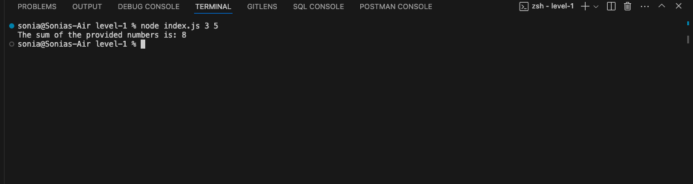
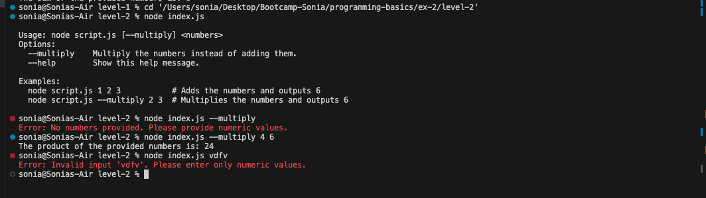
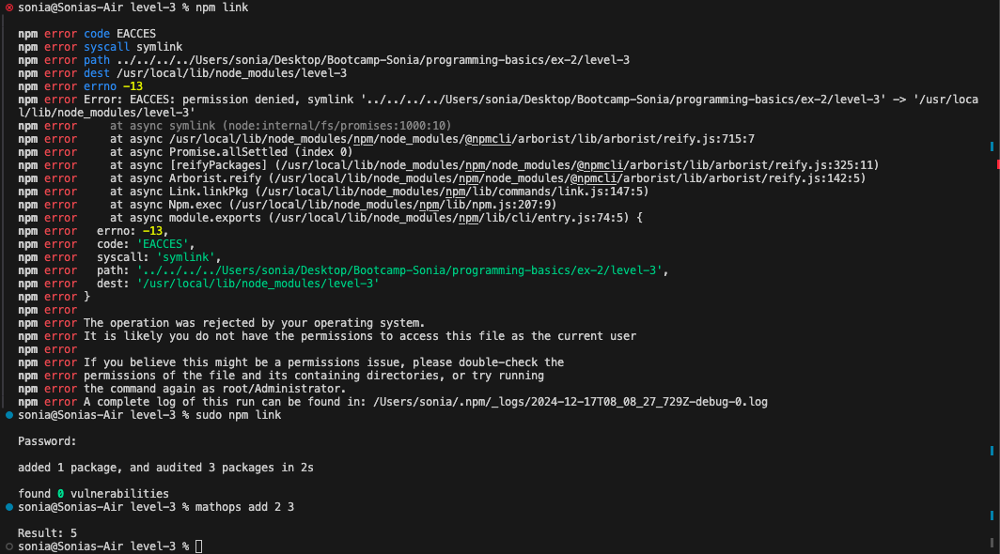

Level 1
Problem Description:
- Create a script that calculates the sum of numbers passed as command-line arguments.
- Use
process.argvto parse and handle the arguments. - Include error handling for invalid inputs (e.g., non-numeric values).
Exit Criteria:
- Running the script with valid inputs returns the correct sum.
- Invalid inputs result in meaningful error messages.

Level 2
Problem Description:
- Enhance the script to accept a
--multiplyflag to multiply the numbers instead of adding them. - Update the help text to include usage instructions.
Exit Criteria:
- The
--multiplyflag works as expected. - Usage instructions are clear and correct.

Level 3
Problem Description:
- Modularize the program by creating a separate file (
mathutils.js) for theaddandmultiplyfunctions. - Take the operation followed by operands as arguments (e.g.,
command add 1 2orcommand multiply 3 4). - Create a script using the
binpart ofpackage.json. Usenpm linkto test the script.
Exit Criteria:
- The program uses functions from
mathutils.jsfor calculations. - The module is reusable in other scripts.
- The script can be executed as a global command.

Challenges I Faced
- Understanding how to parse and validate command-line arguments using
process.argv. - Implementing the
--multiplyflag and integrating it with the existing sum logic. - Using
npm linkeffectively to test the script locally.
Improvements
- Improved user experience with detailed usage instructions in the help text.